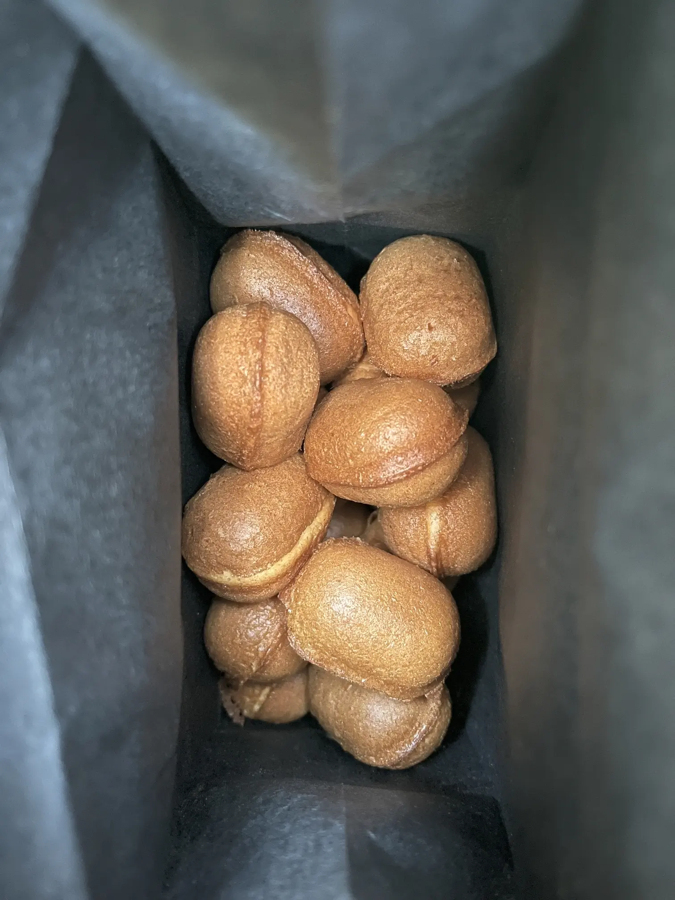

無線運用@光が丘公園 2022/Dec./24
Thank you for your contact!
ロケーション
光が丘公園内の池

清掃工場煙突
鈴カステラ

運用スタイル
IC-T10と紙ログ
アンテナはNA-772 Whip antenna
交信結果
- 8N1***** 433.04MHz 13:35 1st QSO
- JK1***/1 EYEBALL 14:17
- JK1***/1 433.38MHz 14:30 1st QSO
- JK1*** 433.38MHz 14:38
Thank you!
AMATURE RADIO STATION SINCE 2022/Dec./09
FROM NERIMA, TOKYO